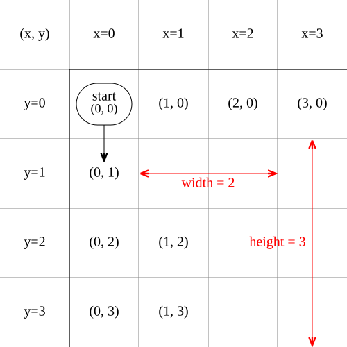

코드를 작성하면, 순서도를 그려주는 모듈
<canvas id="fcCanvas"></canvas>
<script type="module">
// 모듈 준비하기
import { drawFlowchart } from '/modules/flowchart.js';
// 코드 입력받는 컴포넌트 준비하기
const codeInput = document.getElementById('code-input');
// 순서도를 그릴 canvas 준비하기
const exCanvas = document.getElementById('fcCanvas');
// 최초 1회 그리기
drawFlowchart(codeInput.value, 'C', exCanvas);
// 코드 입력에 변경이 있을 때마다 순서도를 다시 그리기
codeInput.addEventListener('input', () => drawFlowchart(codeInput.value, 'C', exCanvas));
</script>
flowchart/
├── dist/ # 빌드된 통합 배포본 (git 추적 포함)
│ ├── flowchart.js # ESM 배포 파일 (import 방식)
│ └── flowchart.umd.cjs # UMD 배포 파일 (<script> 태그 방식)
│
├── src / # 라이브러리 소스 코드
│ ├── index.js # 통합 엔트리 포인트(외부 노출 API)
│ │
│ ├── core / # 시각화 및 그리드 배치 엔진(언어 무관)
│ │ ├── LayoutEngine.js # 노드 그리드 좌표(x, y) 계산 엔진
│ │ └── CanvasRenderer.js # HTML5 Canvas 렌더링 및 인터랙션 처리
│ │
│ └── parsers / # 언어별 파서 디렉토리
│ ├── BaseParser.js # 공통 파서 추상 클래스(parse / format 인터페이스)
│ ├── CParser.js # C 언어 구문 분석 및 포매터
│ ├── JavaParser.js # Java 언어 구문 분석 및 포매터
│ ├── JavaScriptParser.js # JavaScript 구문 분석 및 포매터
│ └── PythonParser.js # Python 구문 분석 및 포매터
│
├── test - app / # 모듈 작동 여부를 직접 확인하기 위한 데모 웹앱
│ ├── index.html # 메인 테스트 UI(실시간 코드 입력 → 차트 출력)
│ ├── main.js # 테스트 앱 진입점(단축키·상태 관리 포함)
│ ├── example - esm.html # ESM 방식 연동 예제 페이지
│ ├── example - umd.html # UMD 방식 연동 예제 페이지
│ └── codes / # 언어별 예제 소스코드 파일(C / Java / JavaScript / Python)
│ ├── C /
│ ├── Java /
│ ├── JavaScript /
│ └── Python /
│
├── package.json # 프로젝트 메타 및 빌드 스크립트(Vite)
└── vite.config.js # Vite 라이브러리 모드 빌드 설정
code를 한 줄 한 줄 분석하면서 nodes에 push합니다. 이 때, 각 Attribute가 갖는 의미는 다음과 같습니다.
0: {content: 'i++', id: 18, type: 'plain', next: 7, x: 1, …}
1: {id: 9, content: 'break', type: 'plain', next: 13, x: 2, …}
2: {id: 8, type: 'if', content: 'i==5', yes: 9, next: 18, …}
3: {id: 7, content: 'i<10', type: 'loop', next: 13, yes: 8, …}
4: {id: 2, type: 'plain', content: 'print(a)', next: 3, x: 4, …}
5: {id: 3, type: 'plain', content: 'print(b)', next: 5, x: 4, …}
6: {id: 1, type: 'if', content: 'a==2', yes: 2, next: 5, …}
7: {id: 5, type: 'plain', content: 'print(c)', next: 13, x: 3, …}
8: {id: 0, type: 'if', content: 'a==1', yes: 1, next: 13, …}
9: {id: 13, type: 'plain', content: 'print(d)', next: 14, x: 0, …}
10: {id: 14, type: 'end', content: 'end', x: 0, y: 5, …}
11: {id: -1, type: 'start', content: 'start', x: 0, y: 0, …}
| node Attribute | 설명 | 예시 | 산출시기 |
|---|---|---|---|
| id | 노드 고유 아이디(보통 라인번호) start: -1 end: 문서의 마지막 |
10 | code2node#() |
| type | 노드그림 |
if: 조건, 마름모 plain : 평문, 사각형 loop: 조건(재귀 있음), 마름모 start, end: 시작, 끝, 둥근사각 |
|
| content | 출력할 내용 | 'print(hello);' | |
| next | 다음블럭의 id | 12 | |
| yes, no | 분기가 있는 경우 id | else가 없으면 no가 없음 next는 분기문의 out의미 |
|
| x. y | 본인의 위치 | start = (0, 0) | getPos() |
| width, height | 자신의 하위 블럭요소까지 고려한 크기 | 11 |
if(a==1) {
if(a==2) {
print(a);
print(b);
}
print(c);
} else {
for (; i<10; i++) {
if (i==5) {
break;
}
}
}
print(d);
좌표정보 "coordinate.svg", iseohyun.com, CC-BY-SA| id | type | content | next | yes | no | x | y | width | height |
|---|---|---|---|---|---|---|---|---|---|
| 18 | 'plain' | 'i++' | 7 | - | - | 1 | 3 | 1 | 1 |
| 9 | 'plain' | 'break' | 13 | - | - | 2 | 2 | 1 | 1 |
| 8 | 'if' | 'i==5' | 18 | 9 | - | 1 | 2 | 2 | 2 |
| 7 | 'loop' | 'i<10' | 13 | 8 | - | 0 | 2 | 3 | 2 |
| 2 | 'plain' | 'print(a)' | 3 | - | - | 4 | 1 | 1 | 2 |
| 3 | 'plain' | 'print(b)' | 5 | - | - | 4 | 2 | 1 | 1 |
| 1 | 'if' | 'a==2' | 5 | 2 | - | 3 | 1 | 2 | 3 |
| 5 | 'plain' | 'print(c)' | 13 | - | - | 3 | 3 | 1 | 1 |
| 0 | 'if' | 'a==1' | 13 | 1 | 7 | 0 | 1 | 3(bug) | 5 |
| 13 | 'plain' | 'print(d)' | 14 | - | - | 0 | 4 | 1 | 2 |
| 14 | 'end' | 'end' | - | - | - | 0 | 5 | 1 | 1 |
| -1 | 'start' | 'start' | 0 | - | - | 0 | 0 | - | - |
| 소속 | 변수명 | 설명 | 기본값 |
|---|---|---|---|
| renderer | zoom | 전체 줌 배율 (수동 변경 시 fullScreen 해제 권장) | 1.5 |
| fontScale | 글자 크기 전체 배율 | 1.0 | |
| arrowHeadSize | 화살촉 크기 (px) | 8 | |
| branchTextMode | 분기 텍스트 모드 (0: Yes/No/loop, 1: Y/N/없음, 2: 전부 숨김) | 0 | |
| showBranchText | branchTextMode 0/2 토글 단축 setter | true | |
| colorMode | 노드 타입별 컬러 테마 ON/OFF | true | |
| darkMode | 다크 배경 테마 ON/OFF | true | |
| fullScreen | true이면 zoom을 무시하고 캔버스에 자동 피팅 | true | |
| showCoordsOnHover | 마우스 오버 시 노드 (x,y) 좌표 툴팁 표시 | true | |
| offsetX | 캔버스 전체 수평 오프셋 (px, 기존의 paddingLeft 역할) | 0 | |
| offsetY | 캔버스 전체 수직 오프셋 (px, 기존의 paddingTop 역할) | 0 | |
| renderer.config | margin | 노드 간격 (좌표 사이의 거리, 변경 후 resizeCanvas() 필요) | 40 |
| blockWidth | 노드 가로 크기 (px) | 120 | |
| blockHeight | 노드 세로 크기 (px) | 60 |
for in, switch, goto, do/while
리모컨: 드레그 기능/리모콘 추가
모드별 예제소스제공
Options 확장:Entry 크기, 간격, 폰트 크기, 화살표 크기, Zoom, Offset 지원
Java, javascript, python 지원
단축키삽입